RadLoc：跨多环境的快速、鲁棒、轻量雷达 3-DoF 全局定位RadLoc: Radar-based 3-DoF Global Localization via Fast, Robust, and Lightweight Spatial Descriptor Across Diverse Environmental Scenarios
直接命中 SLAM/global localization，雷达传感器对恶劣天气和长期运行很有价值；端到端覆盖检索与位姿估计。限制在 3-DoF，需要进一步看坡度、动态交通和多径环境下鲁棒性。
一句话工作总结
用轻量雷达描述子做快速地点检索，再用相位相关估计 3-DoF 位姿，服务多会话 SLAM 全局重定位。
摘要
RadLoc 是一个 spinning radar 全局定位 pipeline，覆盖从 place recognition 到 3-DoF pose estimation 的完整流程。方法用 1D CA-CFAR 加速预处理，利用 radar image 的近距离主导特性设计紧凑空间 descriptor，并采用 hierarchical coarse-to-fine retrieval 提高检索效率；随后结合 phase correlation 做 3-DoF 位姿估计。作者在 5 个数据集的 15 个序列上验证，强调其 descriptor size 小、retrieval 快且能作为 SLAM 与多会话 SLAM 的全局定位模块。
While global localization using spinning radar has gained attention for its robustness to adverse weather and challenging environments, many studies have focused on individual components such as place recognition or pose estimation. In this paper, we take a holistic view of radar sensor-based global localization and present RadLoc, a fast, robust, and lightweight end-to-end pipeline from place recognition to 3-DoF pose estimation. RadLoc accelerates pre-processing using 1D CA-CFAR filtering and leverages the near-range dominance in spinning radar images to design a compact descriptor and an efficient hierarchical coarse-to-fine retrieval strategy. Moreover, coupled with phase correlation-based 3-DoF pose estimation, it forms a versatile global localization module applicable to SLAM and multi-session SLAM systems. Extensive experiments on 15 sequences across 5 datasets demonstrate that RadLoc achieves robust performance while maintaining the smallest descriptor size and fastest retrieval time among state-of-the-art approaches. The supplementary materials are available at https://sparolab.github.io/research/radloc/.
中文解读摘录
- 链接：https://arxiv.org/abs/2607.08115 ｜ PDF：https://arxiv.org/pdf/2607.08115 ｜ 补充材料：https://sparolab.github.io/research/radloc/
- 中文题名：RadLoc：跨多环境的快速、鲁棒、轻量雷达 3-DoF 全局定位
- 关键信息：RadLoc 面向 spinning radar global localization，先用 1D CA-CFAR 加速预处理，利用 radar image 近距离主导特性设计紧凑 descriptor 和 hierarchical coarse-to-fine retrieval，再结合 phase correlation 进行 3-DoF pose estimation。实验覆盖 5 个数据集 15 个序列。
- 为什么值得看：雷达在雨雪雾尘和弱光环境下有优势，RadLoc 把 place recognition 到 pose estimation 端到端打通，可作为 SLAM 和 multi-session SLAM 的全局重定位模块。论文强调最小 descriptor size 和最快 retrieval time，适合嵌入式/长期部署。
- 需要核查：3-DoF 限制对坡道/非平面运动的影响；与 Scan Context、RadarSLAM、学习式 radar descriptor 的召回/精度对比；动态交通、强多径和不同雷达分辨率下的退化情况。
图表/页面预览

{kind=link}
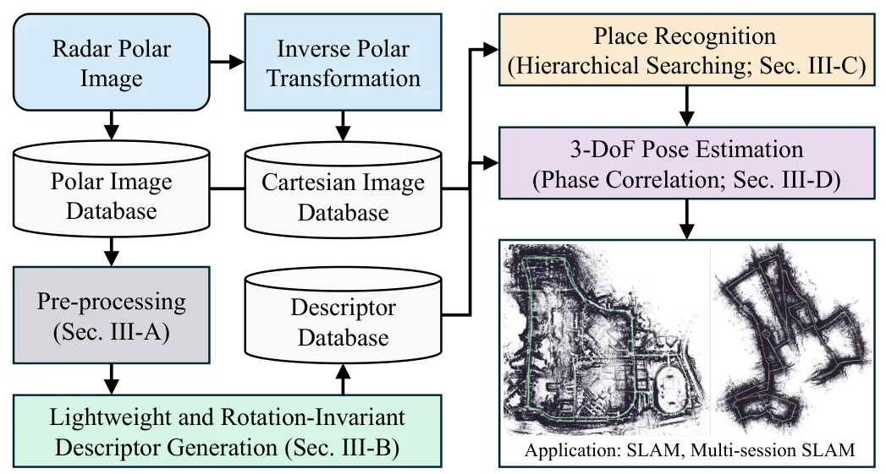
{kind=link}
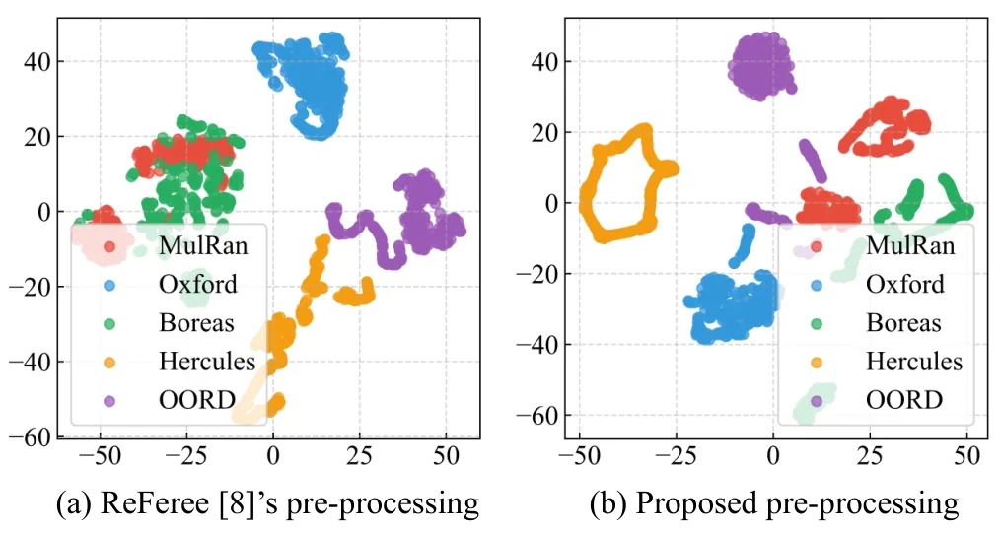
{kind=link}
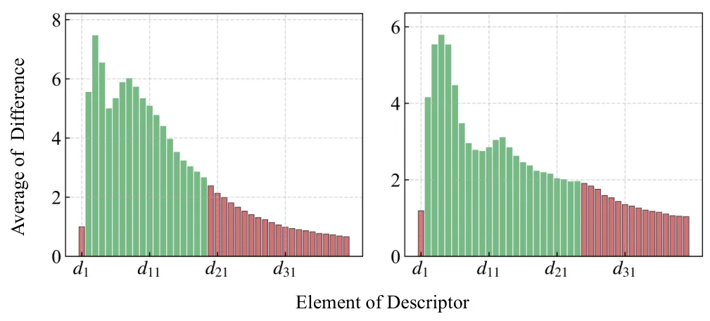
{kind=link}
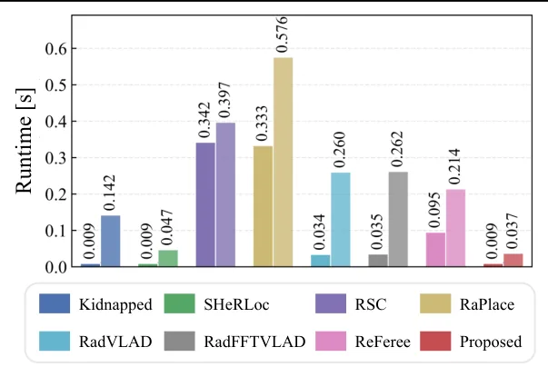
{kind=link}
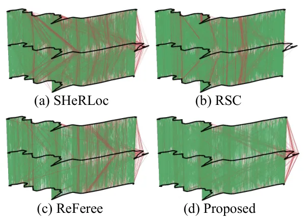
{kind=link}
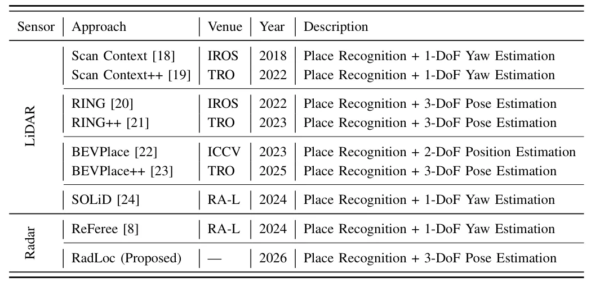
{kind=link}
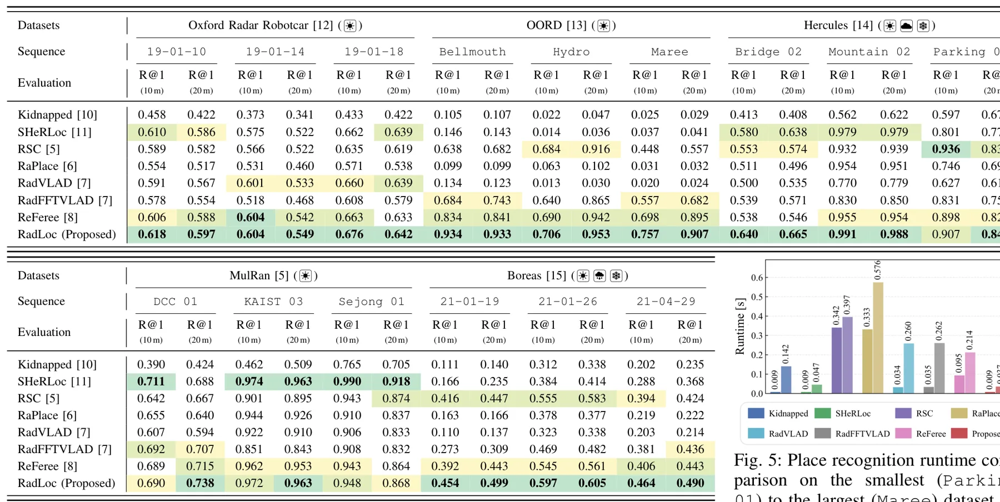
{kind=link}
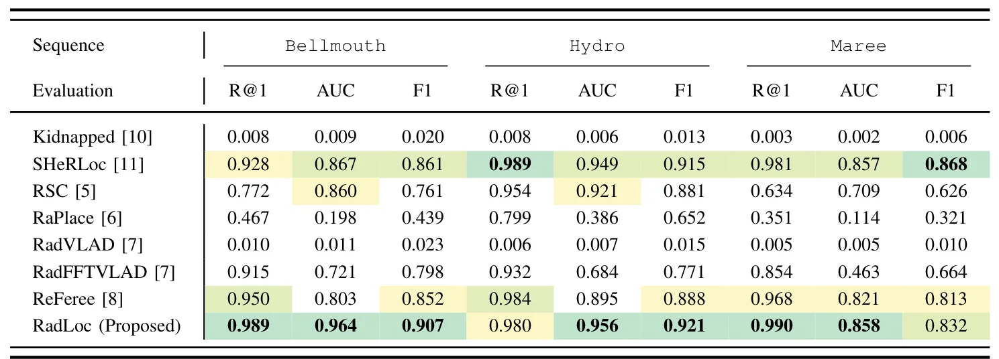
{kind=link}
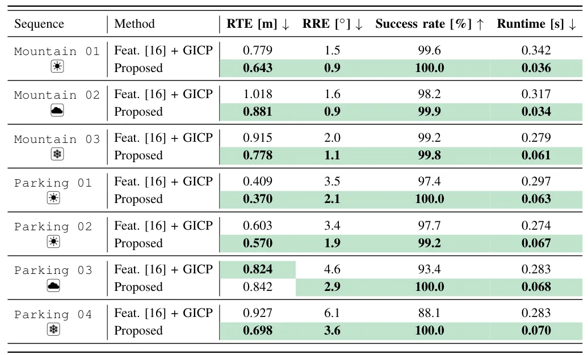
{kind=link}
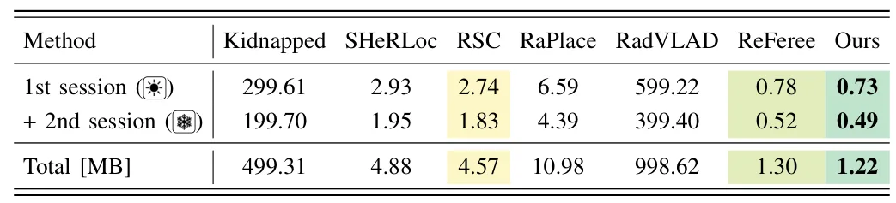
{kind=link}
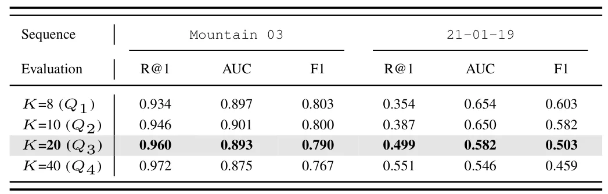